English · Bahasa Melayu · Home
LekasPOS user guide
For LekasPOS 1.13.0 · Last updated 8 October 2026
LekasPOS is a free point-of-sale app for small grocery shops and mini markets. It runs on an Android phone or tablet and works fully offline. This guide explains everything it does, for the owner, managers and cashiers. New here? Read Getting started; cashiers can start with the Quick guide for cashiers. Words in bold are the words you see in the app.
1. Getting started
What you need
- An Android phone or tablet, Android 5.0 or newer. An old phone with 1–2 GB of memory is enough. On a tablet, or a phone held sideways, the item list and the bill are shown side by side.
- No internet is needed to sell. Internet is used only for Google Drive backup, the daily sales report, app updates and error reports (if you allow them).
- No account is needed. A Google account is used only if you turn on Google Drive backup or the daily sales report.
- Optional hardware (see Hardware): a Bluetooth receipt printer (58 or 80 mm), a cash drawer plugged into the printer, a barcode scanner (USB or Bluetooth), a weighing scale that prints barcode labels, and a TV or monitor as a customer screen.
Install and update
- On the phone or tablet, open faizoken.github.io/LekasPOS and tap Download LekasPOS.
- Open the downloaded
LekasPOS.apk. On Android 8 and newer, allow your browser to install unknown apps if Android asks. On Android 5–7, first turn on Settings → Security → Unknown sources. - If Play Protect warns about an unknown app, tap More details → Install anyway. This is normal for apps that are not installed from Google Play.
After that the app updates itself: when a new version is out, an Update button appears at the top of the selling screen for the owner — see App updates. Your products, sales and settings always stay.
The welcome screen (first start)
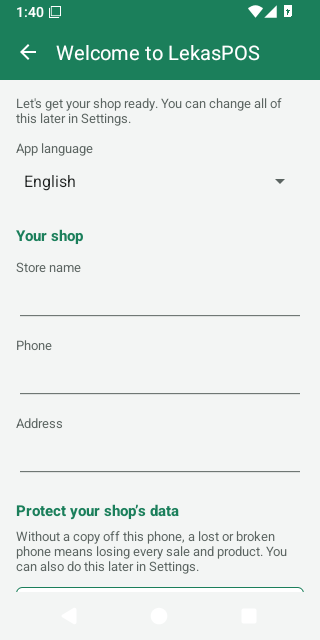
The first time LekasPOS opens on a new phone it shows Welcome to LekasPOS. Everything on it can be changed later in Settings.
- App language: Phone's language, English or Bahasa Melayu.
- Your shop: the Store name (needed), Phone and Address. They are printed at the top of receipts.
- Protect your shop's data: Back up to Google Drive (recommended) or Daily copy to SD card or USB. Please do one of them — see Keeping your data safe.
- Optional: Set up a receipt printer and Staff and PINs.
- Already using LekasPOS on another till of this shop, or replacing a lost phone? Tap Restore or join my shop from Google Drive and turn on Google Drive backup with the shop's Google account: everything comes back. Have a backup file or a copy on an SD card or USB drive instead? Type the shop's name, tap Start selling, then see Restoring a backup.
- Tap Start selling.
Setting up a new shop — a checklist
- Protect the data: Google Drive backup, or a daily copy to an SD card / USB drive (how).
- Shop details for the receipt: Settings → Store & receipt (registration numbers, receipt text, logo) — details.
- Printer and cash drawer: pair the printer in Android's Bluetooth settings, then Settings → Printer & cash drawer → Choose a paired printer → Print a test page (details).
- Products: scan each product at the till and add it, or enter them in Products, or import a spreadsheet (details). Add categories, colours and pictures to make the item list easy to use.
- Payment methods you accept, such as DuitNow or Touch ’n Go (details).
- Staff: give the owner a PIN first and write down the recovery code, then add your cashiers (details).
- With staff, use shifts so each person counts the cash drawer (details).
- Make a test sale, check the receipt, then void it so it does not count in the reports.
Who can do what
Until the owner sets a PIN, everyone using the app is the owner and can do everything. A one-person shop can work like that. Once PINs are set, each person signs in and sees only the buttons their role allows: Owner (everything), Manager (almost everything except settings and staff) and Cashier (selling). When a cashier needs something more, a manager types their PIN. See Staff, PINs and roles.
2. Quick guide for cashiers
Everything a cashier needs, on one page.
| To… | Do this |
|---|---|
| Sign in | Tap your name, type your PIN, tap OK. Not your name? Tap Not you? |
| Start the day | If the till asks Start the shift, count the cash in the drawer and tap OK. |
| Add an item | Scan its barcode. Or type its name in Search and tap it. Or tap Items and tap the item. |
| Item without a barcode (vegetables, kuih) | Tap Items (or search), tap it, then type the weight or the price if asked. |
| Barcode not found | The till says Barcode not found. Call a manager: they tap Add product, type their PIN, the name and the price. |
| Change how many | Tap the line, then + or −, or tap the number and type it. |
| Take an item off | Tap the line, then Remove. |
| Throw away the whole bill | Menu → Clear bill. |
| Customer forgot something | Hold the bill (type a name if you like), serve the next customer, then tap the 1 held button at the top to bring it back. |
| Take cash | Pay → tap the note the customer gave (e.g. RM50). Another amount: Other amount, type it (5 0 0 0 = RM50.00), Done. |
| Card, e-wallet, QR | Take the payment on your terminal or QR first, then Pay → tap Card or E-wallet / QR. |
| Part cash, part card | Pay → Split payment → type the first part → tap its method → pay the rest. |
| Give change | The big Change amount is what to give back. Scan the next customer's first item to start again. |
| Customer asks for the change again | The empty bill shows the Last sale with its change. |
| Print the receipt again | Print a copy under the last sale, or Menu → Receipts. |
| Check a price without selling | Price check → scan or type. |
| A discount or a new price | Ask a manager: Menu → Manager PIN, then Menu → Discount. |
| Leave the till | Tap your name at the top → Lock / switch user (or Menu → Lock / switch user). |
| End of the day | Menu → Close shift → count all the cash → say how much stays in the drawer → take the rest out for the owner. |
Everything you take off a bill is written in the activity log, especially after the customer has seen the total. That is normal — a wrong item is taken off every day — and protects you as much as the shop.
3. The selling screen
The selling screen opens when you start the app. Everything about one customer happens here.
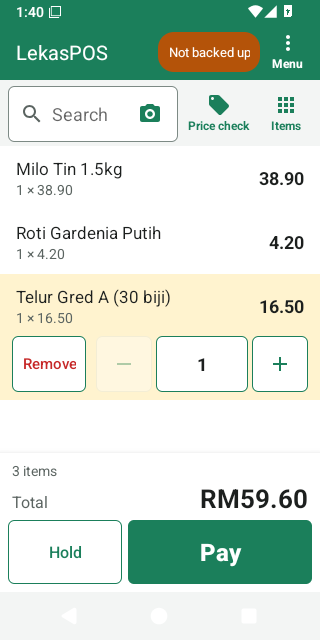
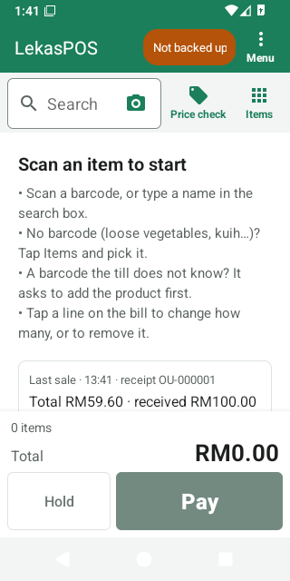
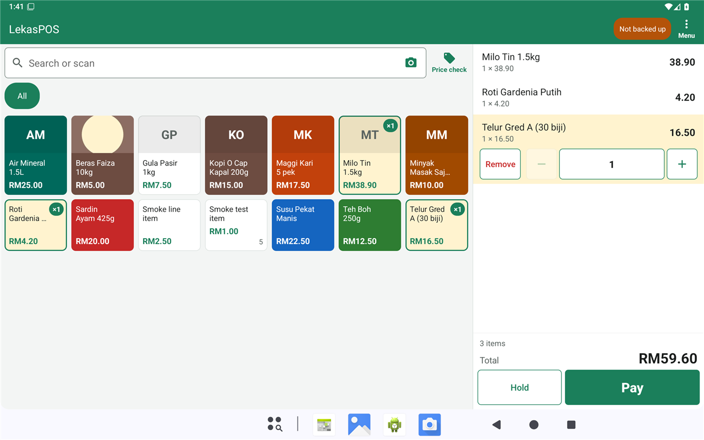
What is on the screen
- Top bar: the shop's name, your name (when PINs are on), small coloured buttons (“pills”) when something needs attention, and Menu.
- Search box with the camera button inside it, Price check, and on phones Items (opens the item list; tap again or Back for the bill).
- The bill: one line per item with its quantity, price and amount.
- Totals: the number of items (plus any discount and tax), the big Total, and the buttons Hold and Pay. The owner, managers and cashiers all see the same screen.
The pills in the top bar
Pills appear only when there is something to see. Tap one for what it means.
| Pill | Meaning |
|---|---|
| 2 held | Bills on hold. Tap to bring one back. |
| Not backed up | The shop's data has not been copied off this phone for 3 days (or Google Drive backup has not worked for a day). See Keeping your data safe. |
| Backup: sign in | Google wants the shop's account to sign in again for Google Drive backup. |
| Data problem | The daily check found damage in the database. See Data problem. |
| Storage almost full | The phone is nearly full. Sales cannot be saved on a full phone: delete photos, videos or apps. |
| Printing… | A receipt is printing now. |
| 3 to print | 3 receipts are waiting to print. |
| Printer offline (3) | The printer cannot be reached and 3 receipts are waiting. Tap any printer pill for the printer settings. |
| Manager: Aminah ✕ | A manager is helping with this bill. Tap to end the help. |
| Update 1.14.0 | A new version of LekasPOS is ready (owner only). |
A cashier who taps a pill about the data sees “Please tell the shop owner…”: the owner fixes it in Menu → Manage shop → Settings.
Adding items
- Barcode scanner
- Just scan — nothing needs to be tapped first. USB and Bluetooth scanners in “keyboard” mode work without any setup. You hear a short beep when the item is added and a low tone when something is wrong.
- Camera
- Tap the camera inside the search box. Hold each barcode inside the frame: each item is added with a beep (Added: …). An item that needs a weight or a price, or a barcode the till does not know, closes the camera and the till asks you. Torch turns on the light. Go back when done.
- Search
- Type part of the name (milo 1k finds “Milo 1kg”), or the first digits of a barcode. Tap the item. Typing a whole barcode or SKU and pressing Enter adds it directly.
- Items (the item list)
- On a phone tap Items; on a tablet it is always on the left. The tabs are Popular (your best sellers of the last 30 days), All, and one per category. Tap a tile to add it. A tile already on the bill shows ×2. A tile shows the price and, for counted products, how many are in stock.
Weighed items, items priced at the till, packs and scale labels
- Weighed items (sold by weight): after the scan or tap, type the weight. The keypad fills from the
right:
1 2 5 0= 1.250 kg. Each weighing is its own line. - Items priced at the till: the tile says Enter price; type the price (
1 5 0= RM1.50). - A product sold by the piece whose price is 0.00 asks for the price, so it is not sold free by mistake. A weighed product needs its price per kg: at 0.00 it is sold free.
- A carton or pack barcode adds one line such as “Milo x24” at the pack price.
- A weighing-scale label adds the weighed item with its weight, or with exactly the price printed on the label (“label price”). See Weighing-scale labels.
A barcode the till does not know
The till beeps low and shows Barcode not found. Tap Add product, type the name and the price, and save: the product is kept for next time and goes on this bill. A cashier who may not add products is asked for a manager's PIN first; the manager then adds it. Tap Cancel to leave it off.
Only products in the list can be sold. For things without a barcode (loose vegetables, kuih, bags), add a product once — sold by Weight or with the Price entered at the till — and pick it from Items.
Changing the bill
- The line you scanned or tapped last is highlighted with its buttons: Remove, −, the quantity, +. Tap another line to give it the buttons; tap it again to hide them.
- + and − change the quantity by one. − stops at 1: use Remove for the last one.
- Tap the quantity to type it (for weighed items, the new weight).
- Scanning the same product again adds 1 to its line.
- Menu → Clear bill throws away the whole bill (it asks first). No PIN is needed.
- The bill is safe: if the phone restarts, the app closes or the battery dies, the bill is still there when the app opens again.
Every item taken off and every quantity lowered is written in the Activity log with its value — marked specially when it happens after the payment screen showed the customer the total.
Holding a bill
- Tap Hold. Type a name if you like (e.g. the customer's) and tap OK. The screen is free for the next customer.
- To bring it back, tap the 1 held pill (or Menu → Held bills) and tap the bill. A bill already on the screen is held in its place.
- To delete a held bill: Delete a bill… in the list (or hold your finger on it).
Held bills stay on this till (they are not shared with other tills) and survive a restart.
Discounts and price changes
Menu → Discount (shown to those allowed to give discounts or change prices):
- Discount on the whole bill — an Amount or a Percent.
- Discount on the selected item — tap the line first.
- Change the price of the selected item.
- No discount removes a discount.
A cashier without these permissions does not see Discount. A manager can help: Menu → Manager PIN → the manager types their PIN → Discount appears for this bill (until it is paid, held or cleared, or for 5 minutes). Discounts and price changes are in the Activity log with who approved them. An item with a hand-made discount or price no longer takes part in promotions.
A customer on the bill
When Customers and credit is switched on (Settings → Store & receipt), the totals show Add customer. Tap it to choose a customer (search by name or phone) or create one. The customer's name is printed on the receipt and the bill can be paid with Customer credit (“pay later”) — see Customers and credit.
Price check
Tap Price check, then scan or type a barcode or name and tap Check. It shows the price, pack prices, stock and any running promotion, without touching the bill. Staff allowed to edit products also see Change price: the new price is used from now on (items already on the bill keep the old one) and is recorded in the Activity log.
The Menu
The Menu shows only what the signed-in person may do.
| Menu entry | What it is |
|---|---|
| Discount | Discounts and price changes on this bill. |
| Clear bill | Throw away the bill on the screen. |
| Held bills | Bills on hold. |
| Sales & refunds (or Receipts) | Past sales: copies, refunds, voids — details. |
| Customers | When customers and credit are on. |
| Open shift / Close shift | Start or end your shift — details. |
| Shift & cash | Cash in, cash out, cash drops, shift reports. |
| Open cash drawer | Opens the drawer without a sale (recorded). |
| Lock / switch user | Lock the till (when PINs are on). |
| Manager PIN | A manager helps with this bill. |
| Manage shop › | Products, Categories, Promotions, Inventory, Reports, Settings, Tax rates, Diagnostics. |
4. Taking payment
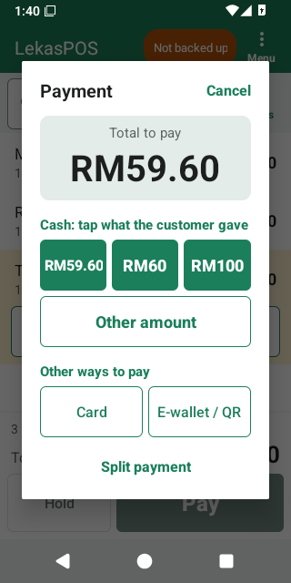
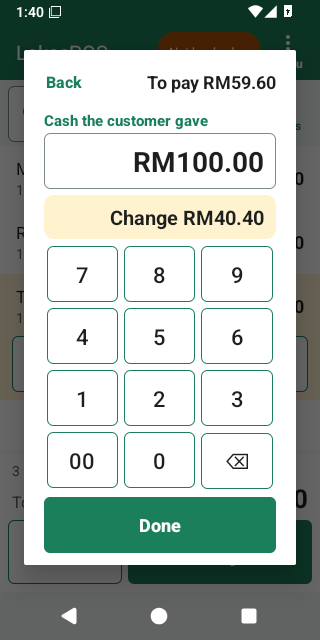
Tap Pay. The bill is frozen while the payment is open. The payment has two steps.
Cash
- Under Cash: tap what the customer gave are the exact amount and the next notes (e.g. RM59.60, RM60, RM100). One tap pays the bill and shows the change.
- Something else? Tap Other amount, type it — the keypad fills from the right, so
5 0 0 0is RM50.00 — and the Change appears as you type. Tap Done. With nothing typed, Done takes the exact amount. - Cash is rounded to the nearest 5 sen (Malaysian rounding) when Round cash payments to 5 sen is on: RM10.02 → RM10.00, RM10.03 → RM10.05. The payment then shows In cash (rounded), and the receipt prints the Rounding. Card and e-wallet always pay the exact amount.
- Typed less than the bill as the first payment? The till asks “Only RM… in cash? Then RM… is still to pay with another method.” — tap Part payment to continue, or Cancel if you meant a bigger amount.
Card, e-wallet / QR and other methods
Under Other ways to pay there is one button per payment method (Card, E-wallet / QR, and any you added, such as DuitNow). One tap pays the whole amount with that method.
LekasPOS only records card and e-wallet payments — it does not talk to the card terminal or the bank. Take the payment first and check it went through, then tap the method.
Split payment
- Tap Split payment.
- Type the amount of the first part (e.g.
2 0 0 0for RM20.00) and tap its method (e.g. Card). With nothing typed, the method pays all that is left. - The payment now shows Still to pay and Paid: Card RM20.00. Pay the rest the same way (e.g. tap a cash note).
Cancel after a part was paid asks whether to cancel those parts; the bill itself stays. A card or QR part the customer really paid is then no longer recorded: when you take the payment again, tap that same method for that amount, or give the money back on the terminal.
Customer credit (pay later)
With a customer on the bill, Customer credit appears among the methods. The amount is added to what the customer owes. Over the customer's credit limit the till asks Over the credit limit; Allow needs a manager. See Customers and credit.
After the sale
- The result shows the Change in big figures (or Paid), Received … · total … and the Receipt number.
- The receipt prints by itself (when a printer is set up) and the cash drawer opens for cash.
- Print a copy (or Print receipt when receipts are not printed automatically) and Share (as a picture or PDF, e.g. by WhatsApp).
- Staff who manage stock also see Running low: … for items of this sale that are at or below their low-stock alert level.
- New sale closes it — or simply scan the next customer's first item.
- A total of zero (e.g. a 100% discount) shows only Complete sale.
A sale is saved completely before anything is printed. If saving fails (for example, the phone is full), the till says Sale not saved: the sale was not recorded and the bill stays. If the customer already paid by card or QR, do not charge them again — fix the problem, tap Pay and tap the same method.
Tapped the wrong method or amount? A saved sale cannot be changed. Ask a manager to void it (Void) and ring it up again.
Questions the till may ask when you tap Pay
- No shift open — the shop requires a shift: tap Open shift, count the drawer, then pay.
- Check the date and time — the phone's clock looks wrong. A sale is kept under the date it was made, for good, so set the date first (Set the date). When the date is impossible (the clock was reset) the sale waits until it is fixed; when the clock is only earlier than this till's last sale, Sell anyway is also offered.
5. Receipts, the printer and the cash drawer
What a receipt shows
- Your logo (optional), the shop's name, address, phone, e-mail, registration no. (SSM), SST no., TIN and your header text.
- RECEIPT, the receipt number (e.g.
KQ-000123; refundsKQ-R000045), the date and time, the cashier and the customer. - Each item with its quantity, price and amount; discounts and promotion savings.
- Number of items, subtotal, discounts, tax, Rounding, the big TOTAL, each payment and the Change.
- Your footer text (or Thank you!), and optionally a QR code customers scan to request an e-invoice.
The receipt is in the Receipt language chosen in Store & receipt (English or Bahasa Melayu), whatever the app's own language. Each till has its own two-letter receipt prefix, so receipt numbers never clash between tills.
Copies
The first receipt of a sale is free to print. Any later print is a copy: it is marked *** COPY ***, needs the permission Print receipt copies (cashiers have it) and is recorded in the Activity log. Copies come from the last sale on the empty bill, from the sale's result, or from Menu → Sales & refunds (or Receipts).
Sharing a receipt
Share sends the receipt As a picture or As a PDF through any app (WhatsApp, e-mail…). This works without a printer.
Setting up the printer
- Switch the printer on and pair it in Android's Bluetooth settings (the PIN is usually 0000 or 1234). Settings → Printer & cash drawer → Pair a new printer (Bluetooth settings) takes you there.
- Back in Printer & cash drawer, tap Choose a paired printer and pick it. On Android 12 and newer, allow Nearby devices.
- Choose the Paper width: 58 mm (32 characters) or 80 mm (48 or 42 characters).
- Tap Print a test page. The digit ruler must fit on one line; if not, try the other 80 mm choice.
- Tap Save.
All the printer options are in Settings → Printer & cash drawer.
When the printer is off
- Selling never waits for the printer. Receipts wait in a queue and print when the printer is back; the pill shows Printer offline (2).
- A receipt still waiting after 10 minutes is dropped (so old receipts do not come out between new customers). Print a copy from Sales if the customer wants it.
- After 10 failed tries the status says offline, tap Retry. not printing: check the paper and the cover means the printer stopped taking data.
- Clear the print queue in the printer settings throws away receipts not yet printed (the sales stay).
The cash drawer
The drawer plugs into the printer and opens through it. It opens by itself for payment methods marked Opens the cash drawer (cash), refunds paid that way, a voided cash sale, a customer repaying credit in cash, a shift's opening float and cash in/out. Menu → Open cash drawer opens it without a sale (needs the permission and is recorded). The drawer opens only through the printer: when the printer is off or out of reach the drawer stays shut (an opening that waits more than 2 minutes is dropped) — use its key. If it never opens, check Cash drawer connected to the printer and try Pin 5 instead of Pin 2.
6. Sales, refunds and voids
Menu → Sales & refunds (called Receipts for staff who may not refund or void) lists the sales of this till, newest first — and of every till of the shop when Google Drive backup is on. Voided sales are tagged VOIDED, refunds REFUND.
- Search by Receipt number: the full number (
KQ-000123) or just the digits (123);R45finds refunds. - Tap a sale to see the receipt, with Print copy, Share, Refund / return and Void for those allowed. A sale with refunds lists them.
- Cashiers do not see Refund / return or Void. Ask a manager to tap Menu → Manager PIN and type their PIN, then open the sale: the buttons appear, and the manager types their PIN again to confirm.
Refund or return
- Open the sale and tap Refund / return.
- For each item coming back, tap the quantity and type how many (or tap All). You can refund part of a receipt now and more later.
- Leave Put the returned items back into stock on if they can be sold again; switch it off for damaged goods.
- Type the Reason (required) and choose Pay back with (normally the way the customer paid).
- Check To pay back and tap Refund, then confirm.
The amount is exactly what the customer paid for those items, with discounts, promotions and tax shared fairly
to the sen; cash is rounded to 5 sen. The refund gets its own number (e.g. KQ-R000045), prints if
receipts print automatically, goes into the current shift and is recorded in the Activity log. A credit sale is
paid back to the customer's credit.
LekasPOS only records the refund. Paying back by card or e-wallet? Do the refund on the card terminal or e-wallet as well. For cash, hand the money back from the drawer.
Void
A void cancels a whole sale as if it never happened — for mistakes such as a test sale or a sale rung up twice.
- Open the sale and tap Void.
- Type why and confirm.
- The sale is removed from the reports, the items go back into stock, and its cash comes off the expected cash of the shift that is open now. Credit is given back.
- A sale with refunds cannot be voided: void the refunds first. A refund can itself be voided.
- Voids are recorded in the Activity log and shown in the Staff check.
- A void only corrects the records: give the customer's money back yourself (cash from the drawer; card or e-wallet on your terminal or bank app).
7. Products
Everything the till sells is a product. Open the list with Menu → Manage shop › → Products (needs the permission Edit products and categories).
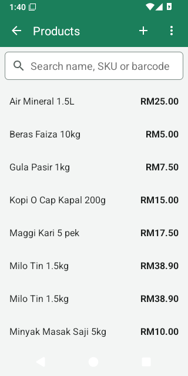
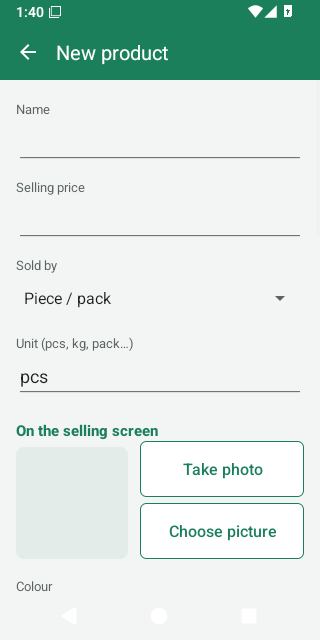
The product list
- Search by name, SKU or barcode. Two or more digits find barcodes that start with them; words find names (each word may be the start of a word in the name, in any order). Scanning a barcode on this screen puts it in the search box.
- Each row shows the price (for weighed products, the price per kg), In stock, and HIDDEN for products hidden from the selling screen. Tap a row to edit it.
- + adds a product. To enter many products, tap Save and add another instead of Save: the product is saved and a new form opens with the same category and tax.
- Searched a barcode no product has? “No product has the barcode … Tap here to add it.” opens a new product with that barcode already filled in.
- ⋮ has Import products (CSV), Export products (CSV) and Example CSV file — see Many products at once (CSV).
The quickest way to add a product is at the till: scan its barcode. If the till does not know it, it offers Add product; after saving, the product is also on the bill.
The product form
Only the Name and the Selling price are needed. Everything else can be added later.
- Name
- What the bill, the receipt and the reports show.
- Selling price
- The price of one piece (or of one kg for weighed products). Type it like
12.50. It may be left empty only for products whose price is typed at the till. For a piece product, a price of 0.00 makes the till ask for the price every time. A weighed product must have its price per kg: at 0.00 it is sold free. - Sold by
- Piece / pack (the usual), Weight (the till asks the weight, the price is per kg), or Price entered at the till (the cashier types the price each time — for things like kuih or loose items of different prices). See How products are sold.
- Unit (pcs, kg, pack…)
- Shown after quantities and prices, for example RM8.00/kg. Choosing Weight changes pcs to kg by itself.
- On the selling screen
- A picture (Take photo, Choose picture, Remove picture) and a Colour for the product's tile. See Pictures and colours.
- Barcodes
- Add barcode (type it, or tap Scan to use the camera). A product may have several barcodes. You can also simply scan with a barcode scanner while the form is open: the code is added (“Barcode … added”). Add pack barcode is for the barcode on a carton or multipack — see Barcodes, packs and cartons.
- Scale PLU
- The item code your weighing scale prints on its labels — see Weighing-scale labels.
- More details
- Category (the tab the product appears under at the till), Tax (only if you charge tax at the till — see Tax rates), Cost price (what you pay the supplier for one piece or one kg; used for profit and stock value, and updated by itself when you receive deliveries), SKU / item code (your own code; searchable, and scanning it also finds the product), Track stock (on by default; off for things you do not count, such as services or plastic bags), Low-stock alert at (warns when stock falls to this level; empty or 0 = no alert), Opening stock (new products only: how many are on the shelf now).
- Show in search and catalogue
- Turn off to hide a product from the tiles, the search and the price check's name search. A hidden product's barcode still scans and sells; it stays in the product list with the tag HIDDEN. Use this for products sold only by scanning, or kept for later. To stop a product being sold at all, delete it: its past sales stay in the reports.
For an existing product the form also shows In stock now, Stock history and Adjust stock, and a Delete button. Deleting asks first (“Past sales keep their lines.”); the barcode then no longer scans. With Google Drive backup on, the product disappears on every till.
When a barcode you add is already used by another product, the app asks “Barcode already used… Save anyway?”. If you save anyway, a scan picks the product whose barcode was added last.
Changes made in this form to price, “sold by”, tax, cost and barcodes (and Change price in Price check) are written to the Activity log as Product price changed, with who made them. There is no separate price-history screen: filter the Activity log instead. A CSV import is written once, as Products imported.
How products are sold
| Sold by | At the till |
|---|---|
| Piece / pack | A scan or a tap adds 1. Scanning the same product again adds 1 more to the same line. |
| Weight | The till asks the weight on a keypad. Digits fill from the right with three decimals:
typing 1 2 5 0 gives 1.250 kg. A weighing-scale label already carries the weight or the
price. |
| Price entered at the till | The tile says Enter price; the cashier types the price each time. |
Selling is never blocked by stock: a product can be sold even when the app thinks there are none left. Stock may then go below zero until the next delivery or count puts it right.
Barcodes, packs and cartons
- Barcodes are tidied when saved: spaces and dashes in an EAN/UPC are removed, a leading 0 a spreadsheet dropped is put back, and a 14-digit carton GTIN that starts with 0 is stored as its EAN-13.
- Add pack barcode asks the Barcode, Pieces in the pack (2 or more) and an optional Pack price (empty = pieces × price). Scanning that barcode at the till puts one line “name x24” at the pack price and takes 24 pieces off stock. When receiving stock, scanning a carton barcode adds all its pieces at once.
Weighing-scale labels
Many shops weigh loose goods on a label-printing scale. The label's barcode carries the item code (PLU) and the weight or the price. LekasPOS reads these labels:
- On each weighed product, type the scale's item code in Scale PLU (leading zeros do not matter).
- Check the label format in Settings → Store & receipt → Weighing-scale labels → Label formats.
The defaults suit most scales:
20IIIIIWWWWWC(prefix 20, 5-digit item code, weight in grams) and21IIIIIPPPPPC(prefix 21, item code, price in sen). In a format, digits are a fixed prefix,Ithe item code,Wthe weight in grams,Pthe price in sen,Xa digit to ignore andCthe check digit. Several formats are separated by commas. - Scan a label at the till: a weight label gives weight × price per kg; a price label gives exactly the printed price. A label printed with weight 0 or price 0.00 makes the till ask.
Pictures and colours
A picture and a colour help the cashier find an item quickly on the selling screen.
- Take photo opens the phone's camera app (the first time Android asks for the camera). Choose picture takes a picture from the gallery, files or Google Drive.
- The picture becomes a small square (the middle of the photo is kept) so it never fills the phone. With Google Drive backup on, it reaches the other tills too.
- Colour: twelve colours or No colour. A product without its own colour takes its category's colour. A coloured tile shows white text.
- The size of the tiles is set per till in Settings → Item size on the selling screen.
Categories
Menu → Manage shop › → Categories. Categories become the tabs of the selling screen's item list (after Popular and All) and group the sales in reports.
- + adds one (a name and a colour). Tap a category to rename it or change its colour.
- Hold (long-press) a category to delete it. Its products stay, without a category.
- Categories are listed in alphabetical order. Moving a product to another category also moves its past sales in the category report.
Tax rates
Menu → Manage shop › → Tax rates (needs Change settings). Most small grocery shops in Malaysia charge no tax at the till: then leave this list empty and choose nothing under Tax on the products.
- + adds a rate: a name (for example SST) and the Rate in %. Tap a rate to change it; hold it to delete it (products using it are then no longer taxed).
- Give each taxed product its rate in the product form (More details → Tax).
- Settings → Store & receipt → Prices include tax (on by default) says whether your shelf prices already contain the tax (the tax is worked out of the price) or the tax is added on top at the till.
- The receipt prints a tax summary with each rate's name and amount.
Payment methods
Menu → Manage shop › → Settings → Payment methods (needs Change settings). The app starts with Cash, Card, E-wallet / QR and Customer credit. Add your own, such as DuitNow or Touch ’n Go, with +:
- Name (on the receipt) and Kind: E-wallet or QR (exact amount), Card (exact amount) or Other (exact amount). All of them pay the exact amount; only cash is rounded to 5 sen and gives change.
- Opens the cash drawer — tick it for methods where money goes into the drawer.
- Shown at the till — untick to hide a method. Methods cannot be deleted (old sales still name them): hide them instead.
- LekasPOS does not connect to a card terminal or an e-wallet: take the payment on your terminal or QR standee as usual, then tap the method in LekasPOS to record it. Each method is counted on its own in the shift report and the sales reports.
- Renaming a method that was already used also renames it on old receipt copies and reports; the app warns you first.
Many products at once (CSV)
To enter or change many products, use a spreadsheet (Google Sheets or Excel) and a CSV file.
- In Products → ⋮ tap Example CSV file (or Export products (CSV) to start from your current products) and Share it to yourself or Save as a file.
- Open it in Google Sheets or Excel. Fill one row per product. Format the barcode column as text, otherwise the spreadsheet turns barcodes into numbers like 9.55E+12.
- Save or download it as CSV (in Excel choose CSV UTF-8 to keep Malay, Chinese or Tamil letters). An Excel file (.xlsx) is not read.
- In Products → ⋮ tap Import products (CSV) and choose the file. A preview shows the new products, the products to update and every line with a problem (with its line number). Nothing is changed yet.
- Tap Import now. The import continues even if you leave the screen; if the app is closed half-way, importing the same file again continues where it stopped.
| Column | What to write |
|---|---|
name (required) | The product name (up to 120 characters). |
price (required) | Selling price, like 12.50 or RM12.50. |
barcodes | One or more, separated by | or ;. |
sku | Your item code. |
category | A category name; new names create new categories. |
unit | pcs, kg, pack… |
cost | Cost price. |
tax | A tax rate's name or percentage (SST, 6%), or none. The rate must already exist under Tax rates. |
sold by | piece, weight or open price. |
track stock, active | yes or no (active = shown at the till). |
stock | For new products, the opening stock. |
low stock | The low-stock alert level. |
id | Written by the export (#…); keep it to update the right product. |
Headers may also be in Malay or in common other words (nama, harga, kod bar, kategori, kos, stok, selling price, qty…), in any case.
- A row matches an existing product by its
id, then a barcode, then the SKU. Otherwise it is a new product. So import a file only once: products without id, barcode or SKU would be created twice. To change products later, export them first and edit that file. - For an existing product the name and price are always taken from the file — so start from a fresh Export products (CSV), never an old file. Any other empty cell changes nothing. Barcodes in the file are added, never removed. Nothing is ever deleted by an import.
- Stock: new products get the
stockcolumn as their opening stock. Existing products change stock only if you switch on Also set the stock of existing products to the file's quantity (recorded as a stock count). Stock needs the permission Receive, adjust and count stock. - Rows whose name starts with
EXAMPLEorCONTOHare skipped. Up to 100,000 lines per file. - A CSV file cannot set pack barcodes, scale PLUs, pictures or colours: add those in the product form.
8. Promotions
Menu → Manage shop › → Promotions. Promotions are deals the till applies by itself when the right items are on the bill — the cashier does nothing.
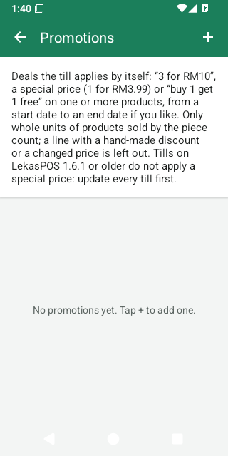
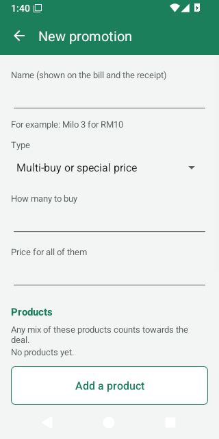
| Type | Example | What the customer gets |
|---|---|---|
| Multi-buy or special price | “Milo 3 for RM10” | Every group of 3 costs RM10. A 4th item is at the normal price. |
| Multi-buy with How many to buy = 1 | “Special price RM3.99” | A special price for a single item, for example for one week. |
| Buy X get Y free | “Buy 1 get 1 free” | In every set of 2, the cheaper one is free. |
Making a promotion
- Tap +. Type the Name (it is printed on the bill and the receipt, e.g. Milo 3 for RM10).
- Choose the Type, then How many to buy and either Price for all of them or How many free.
- Add a product — one or more. Any mix of these products counts towards the deal (for example “any 3 flavours for RM10”).
- Optional Dates: Starts and Ends (the last day the deal runs). Without dates it runs until you switch it off.
- Leave Running on and tap Save.
Good to know
- Only products sold by the piece take part. Weighed items, items priced at the till, pack barcodes and scale labels are left out.
- A line given a hand-made discount or a changed price drops out of the deal (your change wins).
- When items of different prices are mixed, the customer gets the bigger saving. A deal never makes a group cost more than its normal price.
- The saving shows on the bill line (“· promotion name −RM…”) and on the receipt. A bill discount is taken after the promotions.
- A refund of one item from a promotion pays back what that item really cost.
- If one product is in two running promotions, only one of them applies.
- Price check shows the promotion that applies to a product.
- With several tills, update every till: tills on LekasPOS 1.6.1 or older do not apply a special price.
- Switch Running off to pause a deal; delete it with Delete. Sales already made keep their prices.
9. Stock
Menu → Manage shop › → Inventory, for staff with the permission Receive, adjust and count stock (owner and manager by default).
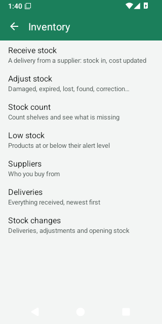
How the app knows your stock
Stock of a product = the last count + deliveries and adjustments since then − sales since then + refunds put back on the shelf. Voided sales do not count. Stock can go below zero (selling is never blocked); a count puts it right.
Sales never change the stock of a product with Track stock off, and it gets no low-stock alert. Do not receive or count such products: their stock figure would only grow.
Receive stock (a delivery)
- Inventory → Receive stock.
- Tap the supplier button to choose the Supplier (or New supplier), and type the Invoice / DO no. if you like (you can scan the DO's barcode into it).
- Scan each product: each scan adds one piece (a carton barcode adds all its pieces). Or tap Add item, pick the product and type how many. Weighed products always ask the weight. Scanning or adding the same product again adds to its line.
- Tap a line to change the Quantity, the Cost per unit, or the Line amount (from the invoice) — typing the invoice's amount keeps it exact and works out the cost per unit. Remove takes the line off.
- Tap Save delivery and confirm. Stock goes up and each product's cost price is updated.
The new cost price is the average of the stock on hand and the delivery (moving average). If there was no stock, no cost yet, or the product does not track stock, it becomes the delivery's cost.
A half-entered delivery is kept even if the phone rings, the app closes or the phone restarts: open Receive stock again to continue. × (Discard) throws it away. A saved delivery cannot be edited or deleted; use Adjust stock for mistakes.
Adjust stock
For stock that leaves or arrives without a sale or a delivery: Inventory → Adjust stock → pick the product (or Adjust stock in the product form).
- Choose a reason: Damaged, Expired, Lost, Theft, Own use, Returned to supplier (these always remove), Found (always adds), or Correction / Other (choose Remove or Add).
- Type the quantity, an optional note, and Save.
- Every removal is written to the Activity log as Stock written off with its value at cost, so the owner sees stock taken off by hand.
Stock count (stock take)
- Inventory → Stock count → +. Give it a name (today's date is filled in) and choose All products or one category. Tap Start.
- Scan or tap a product, type the total on the shelf, and tap OK. OK with nothing typed records 0.
- Counting a product again replaces its count — add up a product kept in two places first. Products you do not count keep their stock.
- Each count applies at once, so you can keep selling while counting. Several people can count at the same time on different tills.
- Count report shows each product's expected and counted quantity and the value found, missing and net at cost.
- When done, open the report and tap × (Finish count). Finishing only closes the count; the stock was already set.
Low stock
Inventory → Low stock lists products at or below their Low-stock alert level (set it in the product form). After a sale, staff who may manage stock also see “Running low: …” on the sale's result.
Suppliers and deliveries
- Inventory → Suppliers: name, contact person, phone, e-mail, address and a note. Tap to edit, hold to delete (past deliveries keep their records). Deliveries in a supplier shows what came from them.
- Inventory → Deliveries: everything received, newest first; tap one for its lines and total.
Stock history and stock changes
- Stock history (from the product form, or tap a product in Low stock): every sale, refund, delivery, adjustment and count of one product, with the stock after each. Tap a sale to open its receipt.
- Inventory → Stock changes: every delivery, adjustment, write-off and opening stock of all products.
10. Staff, PINs and roles
Menu → Manage shop › → Settings → Staff (needs Manage staff and roles — by default only the owner).
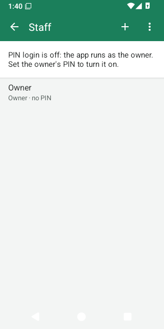
Turning on PIN login
While nobody has a PIN, the app runs as the owner with every permission — fine for a one-person shop. To give each person their own sign-in:
- Settings → Staff → tap Owner. To use your own name, type it and tap Save, then tap the owner again. Tap Set PIN and type a 4–6 digit PIN twice. Avoid 1234 or a birthday.
- The app shows the Owner recovery code (like
7KQM-3HXP-9RTA). Write it down and keep it safe: it is shown only once. Without it, only another owner can give the owner a new PIN. Tap I wrote it down. - PIN login is now on and you are signed in. Add each person with + (New staff): name, Role, Active (may sign in), then their PIN.
The first PIN must be an owner's. At least one owner who can sign in always remains: the app refuses to remove the last one's PIN, role or access.
Signing in and locking
- The sign-in screen asks Who is using the till? Tap your name and type your PIN. Not you? goes back to the names.
- After 5 wrong PINs for one person, the till makes them wait 30 seconds, then 1, 2, 4, 8 and at most 15 minutes after each further wrong PIN. Changing the phone's clock does not shorten the wait. From the 5th wrong PIN, each one is recorded in the Activity log (Too many wrong PINs).
- Lock the till with your name at the top → Lock / switch user, or Menu → Lock / switch user. Your name at the top also offers Change my PIN.
- The till locks by itself after 5 minutes without use. Change it per till in Staff → ⋮ → When the till locks: after 1, 2, 5, 10 or 30 minutes idle, after each sale (good for a till shared by several people), or only when someone locks it. It never locks in the middle of a payment.
Forgotten PIN
- A cashier or manager: the owner (or anyone allowed to manage staff) sets a new PIN in Settings → Staff → the person → Change PIN.
- The owner: on the sign-in screen choose the owner → Forgot PIN? → type the recovery code → a new PIN twice. Staff → ⋮ → New recovery code makes a new code (the old one stops working).
Roles and permissions
Each person has a role. Staff → ⋮ → Roles lists them; tap one to change what it May do, or add your own role with + (for example “Senior cashier”).
| Permission | Allows | Owner | Manager | Cashier |
|---|---|---|---|---|
| Give discounts | Bill and item discounts | ✓ | ✓ | |
| Change prices on a bill | Change an item's price on the bill | ✓ | ✓ | |
| Void sales | Void a sale or refund | ✓ | ✓ | |
| Refunds | Refunds and returns | ✓ | ✓ | |
| Print receipt copies | Receipt copies and sharing old receipts | ✓ | ✓ | ✓ |
| Open the cash drawer | Open the drawer without a sale | ✓ | ✓ | |
| Cash in, cash out and drops | Cash movements during a shift | ✓ | ✓ | |
| See expected cash and shift reports | Shift reports, past shifts, over/short | ✓ | ✓ | |
| Manage customers, take repayments | Add/edit customers, repayments | ✓ | ✓ | ✓ |
| Sell on credit | Pay with customer credit within the limit | ✓ | ✓ | ✓ |
| Go over credit limits, adjust balances | Over-limit sales, credit limits, balance adjustments | ✓ | ✓ | |
| Edit products and categories | Products, categories, promotions, CSV, price check price changes | ✓ | ✓ | |
| Receive, adjust and count stock | Inventory | ✓ | ✓ | |
| See sales reports, profit and stock value | Reports and exports | ✓ | ✓ | |
| See the activity log | Activity log, Staff check | ✓ | ✓ | |
| Change settings | All settings, tax rates, payment methods, backup, updates, diagnostics | ✓ | ||
| Manage staff and roles | Staff, PINs, roles | ✓ |
- The Owner role can always do everything. Owner, Manager and Cashier cannot be deleted, but Manager and Cashier can be changed.
- Only an owner can make someone an owner or change an owner. Nobody can widen their own role or give permissions they do not have themselves.
- A removed person can no longer sign in; their name stays on their sales, receipts and in the Activity log.
When a cashier needs a manager
- One action: when a cashier taps something their role does not allow (for example Allow over a customer's credit limit), the till shows Manager approval with a list of people who may do it. The manager types their PIN; the action is recorded as the cashier's, “approved by” the manager.
- A whole bill: Menu → Manager PIN. For this bill the cashier may give discounts, change prices and handle customers and credit, until the bill is paid, held or cleared (or 5 minutes pass). The top bar shows Manager: name ✕ — tap it to end the help. The manager's other jobs appear too (Open cash drawer, the Refund / return and Void buttons on a receipt, Manage shop), but each asks for the manager's PIN again. Cashiers never see refunds and voids otherwise.
- A back-office screen (Products, Inventory, Reports…): the manager's PIN is asked once and holds until that screen is closed.
11. Shifts and cash
A shift is one person's time at one till, from counting the cash drawer at the start to counting it at the end. The app works out how much cash should be in the drawer, so any difference is seen at once.
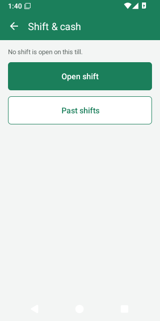
Do I need shifts?
In Settings → Store & receipt → Shifts and customers:
- Require an open shift to take payments — off by default, and switched on by itself once a cashier or manager can sign in with a PIN. The owner can switch it off again; a new till joining the shop may switch it on again, so check it after adding a till.
- Count the drawer when the cashier changes — on by default (see Handover).
Opening a shift
When the shop requires shifts, the till asks by itself when someone starts using it: Start the shift. You can always use Menu → Open shift.
- Count the cash in the drawer — the change for customers (the float) — and type it. Count notes & coins lets you type how many of each note and coin instead.
- If the last close left an amount in the drawer, it is already filled in: press OK if that is what you counted. If you count something else, the till asks Not what was left: Count again, or Keep your count (the difference is recorded for the owner).
Cash in, cash out and drops
Menu → Shift & cash, while a shift is open on this till (needs Cash in, cash out and drops):
- Cash in — money put into the drawer (e.g. more change).
- Cash out — money taken out for something (e.g. paying a supplier); a reason is required.
- Cash drop — money taken to the safe or the bank during the day.
Each opens the drawer, changes the expected cash and is recorded with who did it.
Closing a shift
Menu → Close shift, in three steps:
- Count the drawer: count all the cash and type the total (or Count notes & coins).
- Leave in the drawer: how much stays as change for the next shift (filled in with this shift's float).
- Check Counted / Leave in the drawer / Take out for the owner, add a note if you like (e.g. why it is short), and confirm.
A cashier then sees only “Take out RM… for the owner and leave RM… in the drawer” (a “blind” close — they are not told what was expected). Staff allowed to see shift reports get the shift report. It prints by itself when receipts print after every sale; otherwise tap Print report.
Forgot to close yesterday? In the morning the till says Yesterday's shift is still open: Count the drawer closes it and starts today's shift with the same count.
Handover between cashiers
When someone signs in while another person's shift is open on that till, the till asks Take over the till?
- Count the drawer — closes the other person's shift with this count and starts yours with it. Each person then answers only for the cash of their own shift.
- Not now — you sell on in their shift; this is recorded (Sold in another person's shift without a count).
The shift report
Shift & cash → Shift report (current shift) or Past shifts (all tills). It shows sales, refunds, voids, discounts, tax, each payment method, and the cash drawer:
| Line | Meaning |
|---|---|
| Opening float | Cash counted at the start. |
| + Cash sales, Cash refunds (−), Voided (cash) (−) | Cash taken and paid back in this shift. |
| + Cash in, − Cash out, − Cash drops | Cash movements. |
| + Credit repaid in cash | Customers paying their debt in cash. |
| Expected cash | What should be in the drawer. |
| Counted cash | What was counted at the close. |
| Over / short | Counted − expected (+ = more than expected). |
Only Cash counts towards the drawer. Card, e-wallet, credit and any method you added are listed under the payments but are not in the expected cash, even if they open the drawer. A Checks part lists things worth a look during the shift: bills cleared, items taken off (especially after the total was shown), the drawer opened without a sale, receipt copies, selling without a count, and a float different from what was left. Print report prints it.
12. Customers and credit
For shops that let regular customers pay later (hutang). Switch it on in Settings → Store & receipt → Customers and credit (pay later). The Menu then shows Customers and the selling screen Add customer.
Customers
- Menu → Customers. The title shows how many owe and how much in total. Search by name or phone (012…, 6012… and +6012… all match).
- + adds a customer: Name, phone, e-mail, address, Tax ID (TIN) (for e-invoices), a note and the Credit limit — the most this customer may owe.
- An empty credit limit means no limit: the customer can owe any amount. Only staff with Go over credit limits see this field, so check the limit of customers a cashier added.
- Tap a customer to see Owes (what they owe), their limit and their statement: every purchase on credit, return, repayment and adjustment with the balance after it.
Selling on credit
- On the selling screen tap Add customer and choose the customer.
- Pay → Customer credit (or split: part cash, part credit).
- Over the limit, the till asks Over the credit limit — Allow needs a manager.
The receipt names the customer and the result shows what they now owe.
Repayments and adjustments
- Open the customer → ⋮ → Take a repayment → the amount (filled in with all they owe) → Paid with. Cash is rounded to 5 sen; paying off the whole debt in cash leaves exactly 0.00. A cash repayment goes into the open shift.
- Adjust balance (Owes more / Owes less, with a reason) corrects a balance or gives a customer credit.
- A void gives the credit back by itself. For a refund of a credit sale, keep Pay back with on Customer credit: the amount then comes off what the customer owes.
- A customer can be deleted only when their balance is 0.
13. Reports
Menu → Manage shop › → Reports (needs See sales reports). Reports include the sales of every till of the shop (with Google Drive backup on).
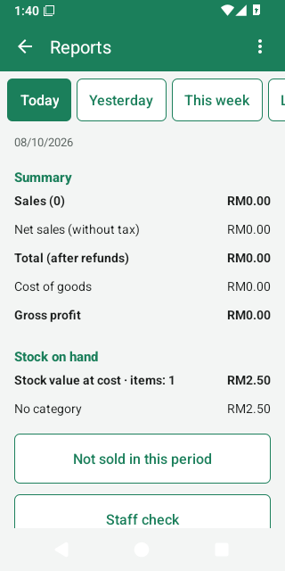
Periods
Today, Yesterday, This week, Last week, This month, Last month, This year, Last year or Choose dates. Weeks start on Monday.
What the report shows
| Line | Meaning |
|---|---|
| Sales (N) | Number of sales and their takings before refunds. |
| Refunds (N) | Money paid back. |
| Voided sales | How many were voided. Voided sales are left out of every figure. |
| Discounts | Discounts and promotion savings given. |
| Net sales (without tax) | After discounts and refunds, without tax. |
| Tax, Rounding | Tax charged; cash rounding. |
| Total (after refunds) | The money taken. |
| Cost of goods | What the items sold cost you (their average cost when sold). |
| Gross profit, Gross margin | Net sales − cost of goods; and as a percentage of net sales. |
| Average sale | Takings per sale. |
| Change vs … | The total compared with the period before. Days and weeks are compared with the same number of days just before (Monday to Wednesday of this week against the Friday to Sunday before it). Months and years are compared with the same days of the month or year before (1–8 October against 1–8 September). |
Below: the total By day, By week or By month; Payment methods; Cashiers; Categories (with profit); Best sellers (top 20); and Stock on hand — the value of the stock you have today, at cost, by category (the same for every period).
Profit is only as good as the cost prices: products with no cost show their whole price as profit. Receiving deliveries keeps costs up to date.
Not sold in this period
Lists products with stock that did not sell at all in the period, highest stock value first — candidates for a promotion or for not re-ordering. Tap one to open it.
Staff check
Reports → Staff check (needs See the activity log) shows, per person and for the chosen period, what is worth a look: sales, items taken off after the total was shown, bills cleared, items taken off, voids, refunds, discounts and price changes, the drawer opened without a sale, receipt copies, cash taken out, stock written off, selling in someone else's shift without a count, a float different from what was left, and the cash over/short of their shifts. People with the most to look at come first.
None of it proves theft — a wrong item is taken off every day. Ask about items taken off after the customer saw the total, a drawer opened without a sale, cash missing from a shift, and one person with far more than the others.
Exports (CSV)
The ⋮ on Reports exports the chosen period as a CSV file for Google Sheets or Excel — Share it (WhatsApp, e-mail, Drive) or Save as a file:
- Summary (CSV) — the figures above, payments, cashiers, categories, top products, stock value.
- Sales per day (CSV) — one row per day: the number of sales and of refunds, net sales, tax, total (the money taken), discount, cost, gross profit, and the day's checks.
- Products sold (CSV) — every product sold with quantity, net sales, tax, cost and profit.
- Receipts – for the monthly e-invoice (CSV) — every receipt with date, cashier, customer and TIN, amounts and payments, for LHDN's monthly consolidated e-invoice. Voided sales are listed too (status voided): leave them out. Refunds are listed with minus amounts.
The files are UTF-8, so Malay and Chinese names show correctly in Excel.
Daily sales report to Google Drive
Want the day's figures without opening the app? Settings → Daily sales report to Google Drive → Turn on
and allow Google. Every day the sales of the day before are written to a folder LekasPOS in your Google Drive:
one file per month, such as 2026-10 daily-sales.csv, with a row for each day (the Sales per day
export: sales and refunds are counts, total is the money). It opens in Google Sheets on any
phone or computer. Turn it on on one till only (with Google Drive
backup on, every till's sales are already in it). It needs Google Play services and internet, and can see only
the files it makes.
14. Activity log
Settings → Activity log (needs See the activity log) records sensitive actions on every till, newest first, with who did it, who approved it, the amount and the details. Filter (the search icon) shows one kind of action.
Recorded: voids, refunds, discounts and price changes, items taken off a bill or bills cleared (marked when after the total was shown), the drawer opened without a sale, receipt copies, product price/cost/barcode changes, deleted products, imports, promotions, stock written off, sign-ins and too many wrong PINs, staff and role changes, shifts, cash in/out/drops, float differences, credit limits, repayments and adjustments, over-limit credit sales, manager approvals and settings changes (including backups restored).
Entries cannot be edited or deleted.
15. Keeping your data safe: backup, restore, Google Drive
All of the shop's data — products, sales, stock, customers, staff — lives on the phone. If the phone is lost, broken, reset, or the app is removed, the data goes with it unless a copy exists somewhere else. LekasPOS makes copies on the phone every day, but those are lost with the phone too. So please choose at least one way to keep a copy off the phone:
| Way | Good for | Needs |
|---|---|---|
| Google Drive backup (recommended) | Automatic, every few minutes; restores a lost phone in full; keeps several tills the same | A Google account, Google Play services, internet now and then |
| Daily copy to a folder (SD card / USB drive) | Automatic, daily; no Google needed. Safe when the phone breaks or is reset — but a card or drive inside the phone is lost if the phone is lost or stolen: take it out now and then, or use Google Drive backup as well | An SD card or USB drive that stays plugged in |
| Backup file (save or share by hand) | An extra copy anywhere: Drive, e-mail, WhatsApp, a computer | Remembering to do it every few days |
While no copy has left the phone for 3 days, the selling screen shows Not backed up.
Google Drive backup
- Settings → Google Drive backup (needs Change settings).
- Type a Name of this till (e.g. “Counter 1”).
- Tap Turn on sync and choose the shop's Google account. Allow access when Google asks.
- The first backup runs in the background (on a big shop it can take a few minutes). The status then says Everything is backed up.
- Data goes to a hidden app folder in that Google Drive: it does not appear among your files and no other app can read it. LekasPOS asks Google only for that folder.
- It runs by itself shortly after each change while the app is open, and every 30 minutes otherwise — whenever the phone is online. Selling never waits for it; a till that is offline catches up later.
- The screen shows the Google account, This till, Last backup, Changes waiting to upload and Other tills. Sync now sends at once. Tills in this store lists every till with its last sync and app version.
- Sign in again appears (and the pill Backup: sign in) when Google needs the account again, for example after a password change.
- Turn off sync stops it on this till; its data stays on the phone.
- Use a strong password and 2-Step Verification on the shop's Google account: the backup holds all the shop's data.
- It needs Google Play services. On phones without them, use the daily copy to a folder.
Backups on the phone
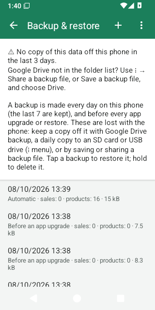
Settings → Backup & restore (in Malay just Sandaran) lists the backups kept on this phone:
- Automatic: one a day, after checking the database for damage; the last 7 are kept. It waits for a quiet moment (no open bill).
- Before an app upgrade: made when an update changes the database; the last 3 are kept.
- Before a restore: the data that a restore replaced; the last 3 are kept.
- Made by hand: the + button (Back up now). These are never deleted by the app.
Hold your finger on a backup to delete it. Remember: these are lost with the phone.
Daily copy to an SD card or USB drive
- Backup & restore → ⋮ → Daily copy to a folder (SD card / USB)…
- Android's folder picker opens. Go to the SD card or USB drive, create a new folder (e.g. “LekasPOS”) — Android 11 and newer do not allow the top level of the card or the Download folder itself — open it and tap Use this folder → Allow.
- The app copies the newest daily backup there at once (Copied to the folder.). From then on, each day's
backup is copied as
lekaspos-YYYY-MM-DD-HHMM.lekasbak; the newest 7 are kept there.
Copy to the folder now copies the newest daily backup again; Stop copying to the folder stops (files already there stay). If the card is removed, the backup screen shows The last copy to the folder failed.
The daily backup can be up to a day old. For a copy of everything up to now (for example before giving the phone for repair), use Save a backup file… instead.
Google Drive not in the folder list? On some phones (an old Google Drive app) Drive cannot be chosen as a folder. Use a backup file instead: ⋮ → Share a backup file → Save to Drive, or Save a backup file… → Drive. This is not automatic — make a new one every few days. Or use Google Drive backup, which does not need the Drive app.
Backup files
- ⋮ → Save a backup file… saves a file named
lekaspos-backup-YYYY-MM-DD.lekasbakwherever you choose (Downloads, Google Drive, a USB drive). - ⋮ → Share a backup file sends it by any app (Save to Drive, e-mail, WhatsApp to yourself).
- Both stop the Not backed up warning for 3 days — even if the file stayed on this phone (Downloads) or the share was cancelled. Save it to Google Drive, a USB drive or a computer, or send it to another phone.
Backup files are not encrypted. Anyone who has one can read all the shop's data, including customers. Keep them private.
Restoring a backup
- Backup & restore → tap a backup in the list, or ⋮ → Restore from a file… and choose a
.lekasbakfile. - The app shows what the backup holds (date, shop, number of sales and products) and asks how to restore. Both
choices replace everything on this phone with the backup:
- Restore this till (a backup of this phone) or Replace the old phone (a backup of another phone) — this phone takes the old till's place; the old phone is no longer used.
- Add as a new till — the same data, but this phone becomes another till, so both phones can be used.
- The backup is checked; then Restart now. The app restarts with the backup's data.
- Before restoring, the current data is saved as Before a restore: restoring that undoes the restore. Only the last 3 are kept, so before trying several backups, tap + (Back up now) first — hand-made backups are never deleted.
- After a restore nobody is signed in; the print queue is empty.
- A till that used Google Drive backup (or a backup that had synced) comes back as a new till with Google Drive backup turned off: turn it on again.
- A backup made by a newer version of LekasPOS needs the app updated first.
- Printer, scanner and other per-till settings stored in the database come back too; the receipt logo picture and the app language do not.
A lost or broken phone
- With Google Drive backup: install LekasPOS on the new phone → on the welcome screen tap Restore or join my shop from Google Drive (or Settings → Google Drive backup) → name the till → Turn on sync → choose the same Google account. Products, sales, stock, customers, staff, promotions and settings come back. The new phone is a new till with a new receipt prefix. Set up its printer, receipt logo, scanner and daily copy again.
- With a folder copy or a backup file: install LekasPOS → Settings → Backup & restore → ⋮ → Restore from
a file… → the newest
.lekasbak→ Replace the old phone.
Anything sold after the last copy left the old phone is lost — that is why a frequent copy matters. If the old phone was stolen, change the Google account's password and remove LekasPOS's access in the Google account's security settings.
Data problem
Every day, before the automatic backup, the app checks the database. If it finds damage, the selling screen shows Data problem, no new backup replaces the good ones, and Backup & restore explains. Please get help before restoring (see Getting help); usually the fix is to restore the newest Automatic backup from before the problem.
If the till opens empty with Data problem, your data was set aside, not deleted — do not start again from scratch. Get help and restore within 7 days: after that, new daily backups start to replace the good ones.
Phone storage
Sales cannot be saved on a full phone. The till warns early with Storage almost full. Delete photos, videos or apps you do not need, or old hand-made backups. If a sale fails because the phone is full, the till says so and keeps the bill.
16. Several tills in one shop
Several phones or tablets in one shop share the same products, prices, staff, customers and stock through Google Drive backup:
- Set up the first till and turn on Google Drive backup with the shop's Google account.
- On each other till, install LekasPOS, tap Restore or join my shop from Google Drive on the welcome screen, give the till its own name and turn on sync with the same Google account. It receives everything.
Join with a new, empty phone: do not add products or sell on it first. If the phone already has products or sales, the app asks Join another shop? — joining adds them to the shop on every till for good, and products entered on both phones stay twice.
- Each till keeps its own receipt numbers (its own prefix such as
KQ-,MB-), its own shift, held bills, printer, scanner, item size and lock setting. - Products, prices, promotions, staff and PINs, customers, settings, sales, stock and the activity log are shared. Reports show the whole shop.
- A till sends its changes within seconds; another till that is not selling may take up to 30 minutes to get them. After changing prices, tap Sync now on the other tills (Settings → Google Drive backup). A till can sell offline all day and catch up later; nothing is lost and nothing is counted twice. Stock is right on every till once they have synced.
- When two people change the same thing on two tills, the later change wins — field by field (a price change on one till and a name change on another both stay).
- A new, empty phone joining the shop takes the shop's staff and PINs (any PIN set on it before is removed — it tells you).
- Keep every till on the same version of LekasPOS. One Google account holds one shop: to keep two shops apart, use two Google accounts.
17. Settings
Menu → Manage shop › → Settings. Most settings need the permission Change settings (only the owner by default; others are asked for an owner's PIN). Settings marked this till apply only to the phone they are changed on; the others apply to the whole shop and reach every till through Google Drive backup.
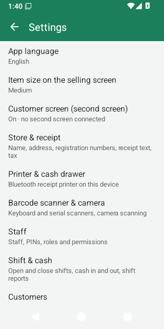
| Setting | What it does | Applies to |
|---|---|---|
| App language | Phone's language, English or Bahasa Melayu for the screens. Receipts have their own language. | this phone |
| Item size on the selling screen | Large (fewer items), Medium (default) or Small (more items) tiles. | this till |
| Customer screen (second screen) | Shows the bill to customers on a second display — details. On by default. | this till |
| Store & receipt | Shop details, receipt, tax, rounding, shifts, customers, scale labels — below. | shop |
| Printer & cash drawer | Receipt printer and drawer — below. | this till |
| Barcode scanner & camera | Test a scanner, serial scanner, camera scanning — below. | this till |
| Staff | Staff, PINs, roles, when the till locks — chapter 10. | shop (lock: this till) |
| Shift & cash | Chapter 11. | this till |
| Customers | Chapter 12. | shop |
| Tax rates | Tax rates. | shop |
| Payment methods | Payment methods. | shop |
| Categories | Categories. | shop |
| Activity log | Chapter 14. | shop |
| Google Drive backup | Google Drive backup. | this till |
| Backup & restore | Backups, folder copy, files, restore. | this till |
| Daily sales report to Google Drive | Daily sales report. | this till |
| Error reports | Error reports. | this phone |
| App updates | App updates. | this phone |
| Diagnostics | Diagnostics. | this phone |
| About | Version, licence, website and privacy policy. | — |
Store & receipt
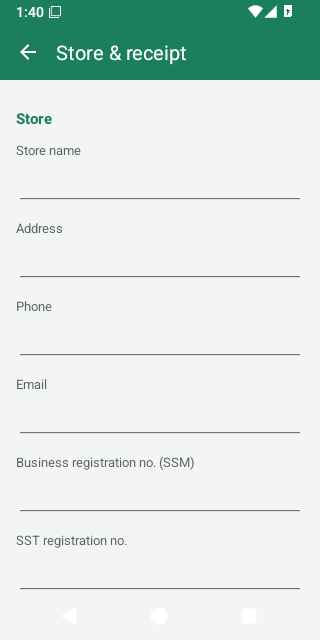
- Store
- Store name (also the title of the selling screen), Address, Phone, Email, Business registration no. (SSM), SST registration no., Tax identification no. (TIN). Empty fields are left off the receipt.
- Receipt
- Receipt header text and Receipt footer text (empty footer = “Thank you!”);
Receipt language (English or Bahasa Melayu); Receipt copies (1–3, for the automatic receipt after a
sale); Print the logo with Choose logo picture / Remove logo — the logo picture is kept on
the phone it was chosen on, so choose it on each till; Print an e-invoice request QR code with its QR
link — in the link,
{receipt},{total}and{date}are filled in for each sale. - Tax and rounding
- Prices include tax (on by default) and Round cash payments to 5 sen (on by default).
- Shifts and customers
- Require an open shift to take payments, Count the drawer when the cashier changes, Customers and credit (pay later).
- Weighing-scale labels
- Label formats — details.
Tap Save. Changes are recorded in the Activity log. The currency is Malaysian ringgit (RM).
Printer & cash drawer
The top line shows the printer's Status (ready, connected, printing, offline…) with Retry when it is offline.
| Option | Choices (default first) |
|---|---|
| Choose a paired printer / Pair a new printer (Bluetooth settings) | Bluetooth printers paired in Android. |
| Paper width | 58 mm (32 characters); 80 mm (48 characters); 80 mm (42 characters). |
| Print as | Automatic (text; picture when needed); Text (fastest); Picture (any language). Automatic prints a picture only when a receipt has letters the printer cannot print (Chinese, Tamil, €…). |
| Printer has Chinese characters (GB18030) | Off. Turn on for a Chinese printer to print Chinese as text. |
| Code page number | 0 (usually right). |
| Cut the paper | On. |
| Blank lines after the receipt | 4. |
| Print a receipt after every sale | On. Off: tap Print receipt after a sale when the customer wants one. |
| Printer draws QR codes itself | Off. |
| Cash drawer connected to the printer | On. |
| Drawer pin | Pin 2 (most drawers); Pin 5. |
Buttons: Save, Print a test page, Open the drawer, and Clear the print queue while receipts are waiting.
Barcode scanner & camera
- Keyboard-mode scanners (USB, or Bluetooth HID) need no setup: plug in or pair and scan.
- Test a scanner: tap the field and scan; it shows exactly what the scanner sent.
- Serial (SPP) Bluetooth scanner: Choose a paired scanner for scanners in serial mode, then tap Save. Stop using the serial scanner and Save forgets it.
- Scan barcodes with the camera: on by default; off hides the camera button on the selling screen.
18. Hardware
| Hardware | What works |
|---|---|
| Phone or tablet | Android 5.0 or newer, 5-inch phones to 10-inch tablets, upright or sideways. |
| Receipt printer | Bluetooth thermal printers using ESC/POS commands (most cheap 58 mm and 80 mm printers), paired in Android's Bluetooth settings. USB, Wi-Fi/LAN and Bluetooth LE-only printers are not supported. |
| Cash drawer | A drawer plugged into the printer's drawer port (pin 2 or pin 5). |
| Barcode scanner | USB or Bluetooth scanners in keyboard (HID) mode — no setup; or Bluetooth serial (SPP) scanners chosen in Settings. Ideally set to send Enter after each code. |
| Camera | The phone's back camera reads EAN-13, EAN-8, UPC-A, UPC-E, Code 128, Code 39 and QR codes. |
| Weighing scale | No cable connection: a label-printing scale prints barcodes with the weight or price (set up). |
| Customer screen | A TV or monitor as a second display: HDMI, USB-C, or Miracast (“Screen mirroring”, “Smart View”, “Wireless display”). |
| Backup storage | An SD card or USB OTG drive for the daily folder copy. |
Barcode scanner tips
- Pair Bluetooth scanners in Android's Bluetooth settings. Most scanners come in keyboard mode: they work at once on the selling screen.
- While a keyboard-mode scanner is connected, Android may hide the on-screen keyboard. The app then shows No keyboard? → Keyboard settings: turn on Use on-screen keyboard (or Show virtual keyboard).
- Scanning works on the selling screen, the price check, the product list and the product form (adds the barcode), Receive stock, stock counts, and whenever you pick a product (Adjust stock, a promotion's products).
- Connecting or disconnecting a scanner never resets the screen or the bill.
Customer screen on a second display
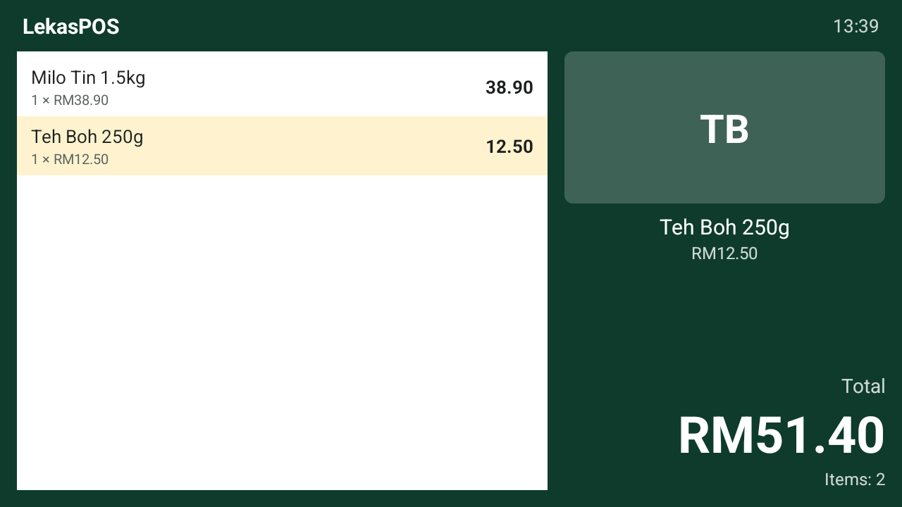
- Connect the TV or monitor with an HDMI or USB-C cable, or cast to it with Screen mirroring / Smart View / Wireless display (swipe down from the top of the tablet, or Settings → Customer screen → Connect a screen).
- With LekasPOS open, the second screen shows Welcome with the shop's name, while the tablet stays the cashier's screen.
- While selling, customers see each line, the item just added (large, with its picture), any bill discount, the Total (Total to pay during payment) and, after paying, Thank you!, Paid and their Change.
- The customer screen uses the receipt language. While it is on, customers see only the customer screen, never the back office (reports, costs).
- Google Home's or Chromecast's Cast screen only copies the tablet's screen and cannot show the customer screen: use Screen mirroring (Miracast) or a cable.
- Turn it off per till in Settings → Customer screen (second screen). Then also unplug or stop casting to the second screen: otherwise Android copies the tablet's own screen to it, reports and costs included.
19. App updates, error reports and diagnostics
App updates
- Once a day LekasPOS checks GitHub, where it is published, for a new version, and downloads it in the background. Only the request is sent — nothing about your shop.
- When a new version is ready, the owner (anyone allowed to change settings) sees Update 1.x.y at the top of the selling screen. Tap it to see What's new, then Update now. Finish or hold the bill first.
- The first time on Android 8 and newer, Android asks to allow LekasPOS to install apps: tap Continue and turn on Allow from this source, then go back. Android then asks to confirm the update. LekasPOS closes while Android installs it; then tap Open. All data stays (a backup is made first when the update changes the database).
- Every download is checked (size, fingerprint and signature) before it is offered.
- Settings → App updates shows the version, Look every day (on), Include test versions (for testers) (off) and Check now.
- Your version is shown in Settings → About.
Error reports
Once, the app asks Help fix problems? With Send reports, when the app stops, freezes or shows an error, the phone sends a short technical report to the LekasPOS developer: what went wrong, the app version, the phone model, Android version and memory. It never holds your sales, products, prices, customers, staff, PINs or Google account. Change your answer any time in Settings → Error reports.
Diagnostics
Settings → Diagnostics (or Manage shop › Diagnostics) is for solving problems:
- Share the error log — sends the phone's technical error log (no shop data) to whoever is helping you.
- Send a report to the developer — with what happened and, if you want a reply, your phone or e-mail.
- Quick test and Full test — measure how fast this phone is with a large shop's data. They use a separate test database and never touch your shop's data; Delete test data afterwards. The full test needs about 350 MB and 5–20 minutes, on the charger.
20. Troubleshooting and questions
Selling
- The scanner beeps but nothing is added / “Barcode not found”.
- The product does not have that barcode yet. Add it with Add product (a manager's PIN for cashiers), or add the barcode to the existing product in Products. Carton barcodes need Add pack barcode.
- The scanner types into the search box, or nothing happens.
- Check the scanner in Settings → Barcode scanner & camera → Test a scanner. Set the scanner to send Enter after each code (see its manual). A serial (SPP) scanner must be chosen there; a keyboard-mode one needs no setup.
- The on-screen keyboard disappeared.
- A keyboard-mode scanner is connected. Turn on Use on-screen keyboard in Android's keyboard settings (the app offers Keyboard settings).
- I cannot find Discount or Open cash drawer in the Menu, or Refund / Void on a receipt.
- Your role does not allow it, so it is hidden. Ask a manager to tap Menu → Manager PIN and type their PIN: the buttons appear (refunds, voids and the drawer ask for the manager's PIN again). Or the manager signs in with Lock / switch user.
- The till says “Check the date and time”.
- The phone's clock is wrong (often after the battery ran flat). Sales are kept under the date they were made, so set the right date and time first — best with automatic date and time on.
- The till says “No shift open”.
- The shop requires a shift: tap Open shift, count the drawer, then pay. To stop requiring shifts: Settings → Store & receipt → Require an open shift to take payments off. A new till joining the shop may switch it on again: check it after adding a till.
- “Sale not saved”.
- The sale was not recorded and the bill is kept. Read the reason (often the phone is full), fix it and tap Pay again. If the customer already paid by card or e-wallet on your terminal, do not charge them again: just tap the same method.
- A customer was charged twice / a test sale.
- A manager opens Menu → Sales & refunds → the sale → Void. A void only corrects the records: give the customer's money back yourself (cash from the drawer; card or e-wallet on your terminal or bank app).
- The app locks too often / never.
- Settings → Staff → ⋮ → When the till locks (per till).
Printer and drawer
- “No paired devices” when choosing a printer.
- Pair it first in Android's Bluetooth settings (PIN usually 0000 or 1234), then Choose a paired printer.
- “Printer offline” / “offline, tap Retry”.
- Is the printer on, charged and near? Is Bluetooth on? Is it connected to another phone? Tap Retry in the printer settings. On Android 12+, allow Nearby devices (Open settings → Permissions).
- “not printing: check the paper and the cover”.
- Out of paper, cover open or overheated. Fix it; printing continues by itself.
- Receipts that were waiting never printed.
- Automatic receipts waiting more than 10 minutes are dropped. Print a copy from Sales & refunds.
- Question marks or wrong letters on the receipt.
- Set Print as to Automatic or Picture. For a Chinese printer turn on Printer has Chinese characters. Keep the code page at 0.
- Lines are cut or wrap.
- Choose the right Paper width; for 80 mm try both 48 and 42 characters with Print a test page.
- The cash drawer does not open.
- Check Cash drawer connected to the printer is on, try Pin 5, and check the payment method has Opens the cash drawer ticked. The printer must be connected.
Backup and Google Drive
- “Not backed up” will not go away.
- Turn on Google Drive backup or the daily folder copy — or save/share a backup file. With Google Drive backup on, open its screen: the status says what is wrong (no internet, sign in, Drive full).
- “Backup: sign in”.
- Settings → Google Drive backup → Sign in again with the same Google account.
- “Google Drive backup needs Google Play services”.
- This phone has no Google Play services: use the daily copy to an SD card or USB drive.
- “The Google Drive of this store is full”.
- Free space in that Google Drive or buy more storage; backup continues by itself.
- “This phone's date or time is wrong”.
- Turn on automatic date and time in Android's settings.
- Google Drive is not in the folder list.
- Use Share a backup file → Save to Drive instead, or Google Drive backup.
- “This is not a LekasPOS backup file” / “damaged or incomplete”.
- Choose a
.lekasbakfile; try another copy if it was cut short. - Changes on one till do not appear on the other.
- Both tills need Google Drive backup on with the same Google account and internet. Tap Sync now on both. Tills in this store shows when each till last synced.
Other questions
- Is my data sent to the developer?
- No. Shop data stays on the phone and, if you turn on Google Drive backup or the daily sales report, in your own Google Drive. Error reports (only if you allow them) hold technical details only. See the privacy policy.
- Do I need internet?
- Not to sell. Only for Google Drive backup, the daily sales report, updates and error reports (if you allow them).
- Does it cost anything?
- No. LekasPOS is free and open source (GPL-3.0).
- Can I use it for e-invoicing (LHDN)?
- LekasPOS does not send e-invoices to LHDN itself. The receipt can print a QR code to your own e-invoice request page (set the link in Store & receipt), and the Receipts – for the monthly e-invoice export lists every receipt so you or your accountant can submit the monthly consolidated e-invoice (leave out the voided ones).
- The owner forgot the PIN and lost the recovery code.
- Another person with the Owner role can set a new PIN for them (Settings → Staff). Without another owner there is no way back in — please ask for help before clearing or reinstalling the app, which deletes the data on that phone. Keep the recovery code safe, and consider giving a second trusted person the Owner role.
- How do I move to a new phone?
- First finish selling on the old phone. With Google Drive backup, wait until the old phone's Google Drive backup screen says Everything is backed up, then set up the new phone as in A lost or broken phone. Without it, save a backup file on the old phone after the last sale and restore it on the new one with Replace the old phone. Do not sell on the old phone after that.
21. Words used in the app
| English | Bahasa Melayu | Meaning |
|---|---|---|
| Till | Kaunter | One phone or tablet used for selling. |
| Bill | Bil | The items of the customer being served. |
| Hold / held bill | Tangguh / bil ditangguh | A bill put aside to serve someone else. |
| Clear bill | Kosongkan bil | Throw away the bill on the screen. |
| Change | Baki | Money given back to the customer. |
| Split payment | Pecah bayaran | A bill paid with more than one method. |
| Rounding | Pembundaran | Cash rounded to the nearest 5 sen. |
| Receipt copy | Salinan resit | Any print of a receipt after the first. |
| Refund / return | Bayaran balik / pulangan | Money paid back for items returned. |
| Void | Batalkan | Cancel a whole sale as if it never happened. |
| Price check | Semak harga | See a price without selling. |
| Popular | Laris | The best sellers of the last 30 days. |
| Promotion | Promosi | A deal the till applies by itself. |
| Shift | Syif | One person's time at one till, from count to count. |
| Float | Wang apungan | The change in the drawer at the start of a shift. |
| Cash drop | Simpanan wang | Cash taken from the drawer to the safe or bank. |
| Expected cash / over / short | Tunai dijangka / lebih / kurang | What should be in the drawer, and the difference. |
| Customer credit | Kredit pelanggan | Pay later; the customer owes the shop. |
| Owner / Manager / Cashier | Pemilik / Pengurus / Juruwang | The built-in roles. |
| Manager approval | Kelulusan pengurus | A manager's PIN for something the cashier may not do. |
| Recovery code | Kod pemulihan | The owner's way back in after a forgotten PIN. |
| Activity log | Log aktiviti | The record of sensitive actions. |
| Receive stock / delivery | Terima stok / penghantaran | Goods arriving from a supplier. |
| Adjust stock / written off | Laras stok / dihapus kira | Stock changed by hand (damaged, expired…). |
| Stock count | Kiraan stok | Counting what is on the shelves. |
| Cost price | Harga kos | What one piece or kg costs you. |
| Gross profit | Untung kasar | Net sales minus the cost of the goods sold. |
| Google Drive backup / sync | Sandaran Google Drive / segerak | Copying the shop's data to Google Drive and between tills. |
| Backup & restore | Sandaran | Copies of the data and bringing one back. |
22. Privacy and getting help
- Privacy: your shop's data stays on your phone and, only if you turn on Google Drive backup or the daily sales report, in your own Google Drive. The developer never receives it. Read the privacy policy.
- Problems or ideas: report them on GitHub, or send a report from the app (Settings → Diagnostics → Send a report to the developer, with your phone or e-mail if you want a reply).
- Source code: github.com/FaizoKen/LekasPOS (GPL-3.0).
- Download and install: the LekasPOS home page.